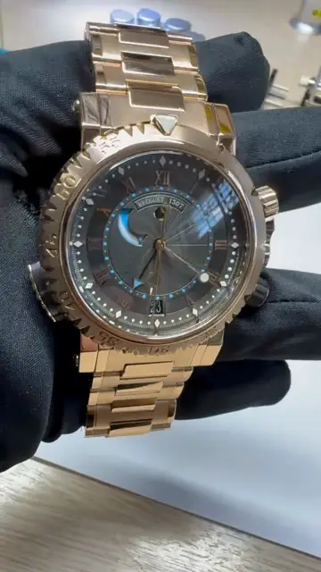
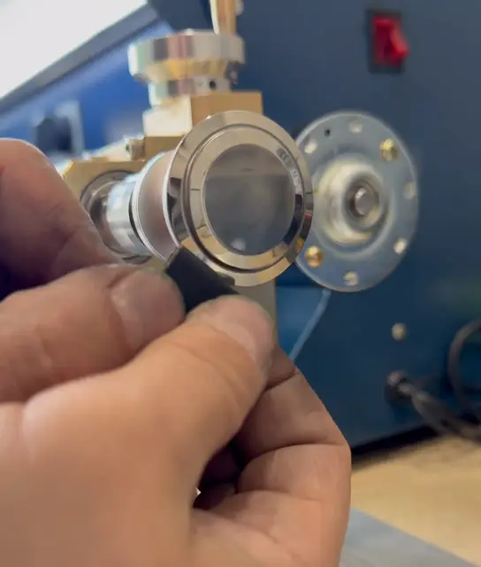
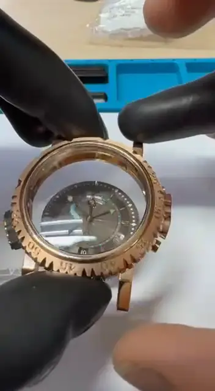

Что нужно
вашим часам?
Поверните заводную головку
или выберите отметку






ДиагностикаБесплатно. Детальная проверка механизма перед ремонтом.
МеханизмПолная разборка, обслуживание и настройка.
ПолировкаВозвращает часам их внешний вид.
Элемент питанияЗамена по регламенту — с сохранением герметичности корпуса.
Ремешки и браслетыПодбор и изготовление оригинальных ремешков под модель.
СтеклоСапфировые, минеральные и нестандартные стёкла.